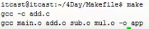
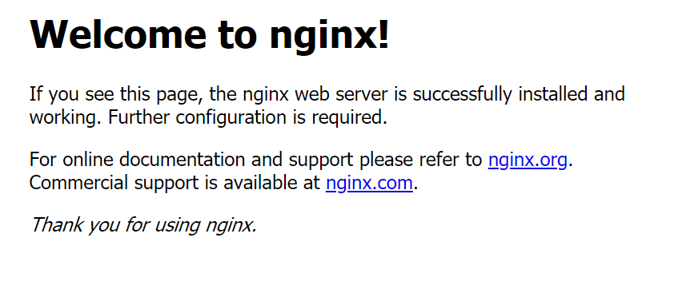
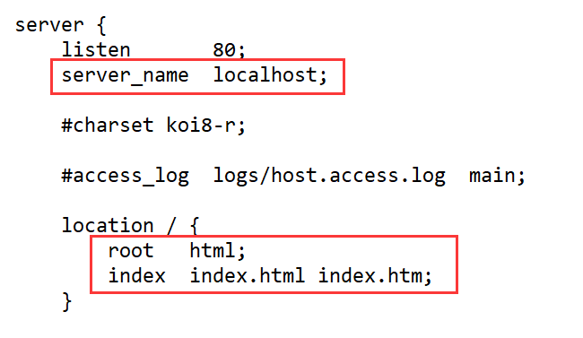
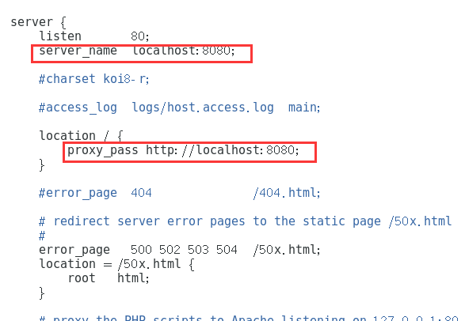
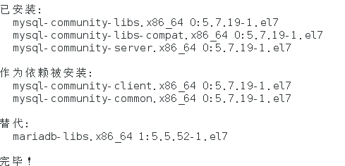
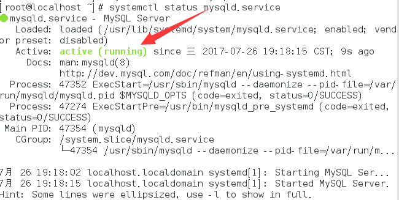
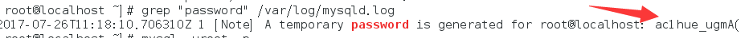
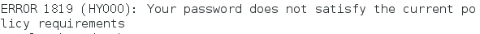
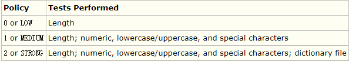
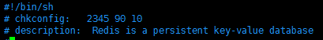

linux篇
vi编辑器
vim是vi发展过来的文本编辑器，现在普通使用vi，即是使用vim，所以前提是已经装了vim，
vi有三种模式：
1.命令模式：打开文件之后，默认
2.编辑模式：输入命令切换到该模式（a,i,o,s）,退出跳到命令模式按ESC
3.末行模式：可以输入一些命令进行一些操作，要进入该模式需要从命令模式进入（输入冒号即可），退出该模式跳到命令模式按两下ESC
命令模式下:
光标移动：H,J,K,L
0行首，$行尾
gg文件头，G文件尾
移动到某行：按完数字加G，如第500行（500G）
x删除后面的字符（X删除前面）【本质上是剪切】，u撤销（恢复ctrl+r），p粘贴
yy复制行，
v：可视模式（选中），y复制
/：查找模式，n切换
#：选中相同的单词
保存退出：ZZ
末行模式：
跳转行，直接输数字。
字符串替换：:s/tom/jack（替换光标所在的tom为jack）加/g替换整行，加在冒号后加$替换整个文件的。
如：
:s/tom/jack/g替换整行
:$s/tom/jack/g替换整个文件
实际使用中要将$换成%才行。
在末行模式下可以输入命令，冒号加感叹号加命令
在vi编辑器中垂直分屏，末行模式下vsp，切换ctrl+w(ctrl+ww)
makefile
项目的代码管理工具。
记录了如何编译程序的步骤。
规则三要素：目标、依赖、命令。
格式【
目标：依赖条件。
命令。
】
最终目标必须写在文件最上面。
例【
app:main.c add.c sub.c mul.c
gcc main.c add.c sub.c mal.c –o app
】
命令前必须是tab缩进。
执行makefile：make命令就是去找makefile里的终极“目标”，然后执行对应的命令。
为了让编译效率提高，可修改为【
app:main.o add.o sub.o mul.o
gcc main.o add.o sub.o mal.o –o app
main.o:main.c
gcc –c main.c
add.o:add.c
gcc –c add.c
sub.o: sub.c
gcc –c sub.c
mul.o: mul.c
gcc –c mul.c
】
此时如果只修改了add.c，再make时，只会对add.c进行重新编译（原理是在寻找add.o依赖时，会对add.o和add.c的修改时间进行对比）

makefile中有【变量】【模式匹配】【自动变量】
自动变量只能在某条规则内部的【命令】里使用。
$\<：所属规则中的第一个依赖
$@：所属规则中目标
$\^：规则中的所有依赖
因此上面的makefile可以改为【
obj=main.o add.o sub.o mul.o
target=app
$(target):$(obj)
gcc $(obj) –o $(target)
%.o:%.c
gcc –c $\< -o $@
】
makefile里还有函数，所有的函数都有返回值。
就不用再手动给obj变量赋值需要的.o文件了，只需要通过函数调用即可完成，makefile可被修改为【
src=$(wildcard ./*.c) ##查找某目录下的.c
obj=$(patsubst ./%.c, ./%.o, $(src)) ##将.c替换成.o
CC=gcc ##makefile本身维护的变量（大写）（有默认值），
##用户可以修改
target=app
$(target):$(obj)
gcc $(obj) –o $(target)
%.o:%.c
gcc –c $\< -o $@
clean:
rm $(obj) $(target)
】
上面的clean用来清理.o和可执行程序
使用命令：make clean（此时不会再执行上面的规则，只会执行make后面对应的目标）
nginx
nginx 简介
nginx (engine x) 是一个高性能的HTTP和反向代理服务器，也是一个IMAP/POP3/SMTP服务器。nginx是由伊戈尔·赛索耶夫为俄罗斯访问量第二的Rambler.ru站点（俄文：Рамблер）开发的，第一个公开版本0.1.0发布于2004年10月4日。
其将源代码以类BSD许可证的形式发布，因它的稳定性、丰富的功能集、示例配置文件和低系统资源的消耗而闻名。2011年6月1日，nginx 1.0.4发布。
nginx是一款轻量级的Web 服务器/反向代理服务器及电子邮件（IMAP/POP3）代理服务器，并在一个BSD-like 协议下发行。其特点是占有内存少，并发能力强，事实上nginx的并发能力确实在同类型的静态网页服务器中表现较好，中国大陆使用nginx网站用户有：百度、京东、新浪、网易、腾讯、淘宝等。
反向代理
首先要明白什么是代理，什么是反向代理，客户端使用的是代理，而服务端使用的是反向代理。
反向代理的实现规则
(1)首先需要一个负载均衡设备来处理用户的请求，将用户的请求再分发到空闲的服务器上
(2)服务器得到响应之后，处理数据并返回对应的响应数据到负载均衡设备
(3)负载均衡设备最后再将服务器返回的响应数据返回给用户
用户《-》负载均衡、分布式、集群设备《-》服务器
再举一个现实中的场景，比较容易理解一些
当我们拨打一个集团客户电话的时候，比如保险公司电话、10086移动客服电话、10000电信客服电话、110、119等等，可能拨打的号码后面对应的客服有几十个甚至几百个，但是你不会知道到底是谁接了电话，是谁在帮助你解决问题，因为整个分配过程是由系统自动完成，你可能每一次拨打，对应接听的客服都不一样，这里所拨打的号码分配机制就是反向代理。
反向代理的好处在于隐藏了真实的服务端，当我们请求某一个网址的时候，就像拨打集团号码一样，背后可能有成千上万台服务器为我们服务，但具体是哪一台，用户不会知道，用户也不关心这些，用户关心的只是能不能获取到自己想看到的内容而已，所以用户输入的网址就是反向代理服务器的地址，反向代理服务器会帮我们把请求转发到真实的服务器那里去。
在反向代理服务中，nginx因为其良好的自身性能、稳定性和特性，占据全球领域大部分业务场景，所以国内的互联网巨头，几乎都是使用nginx完成的反向代理服务。
nginx安装前序
nginx是C语言开发的，尽量建议在Linux上部署运行，当然，也可以安装 Windows 版本，这里只演示怎样在Linux环境中使用。
下面的所有安装过程，为了简化安装步骤，建议使用超级管理员来完成，否则会出现权限不够的错误提示。
PCRE pcre-devel安装
PCRE(Perl Compatible Regular Expressions) 是一个Perl库，包括 perl 兼容的正则表达式库。nginx 的 http 模块使用 pcre 来解析正则表达式，所以需要在 linux 上安装 pcre 库，pcre-devel 是使用 pcre 开发的一个二次开发库。nginx也需要此库。命令：
yum install -y pcre pcre-devel
(PS：yum命令会根据Linux当前环境中缺少的内容进行网络下载，所以首先确定是否能上网，否则会出现错误状态，后面不再标注说明)
zlib-gzip安装
zlib 库提供了很多种压缩和解压缩的方式， nginx 使用 zlib 对 http 包的内容进行 gzip ，所以需要在 Linux上安装 zlib 库，执行以下命令安装：
yum install -y zlib zlib-devel
gcc C++安装
nginx 需要在本地Linux环境中进行编译，编译依赖 gcc C++环境，如果没有 gcc 环境，则需要执行以下命令进行安装：
yum install gcc-c++
OpenSSL安装
OpenSSL 是一个强大的安全套接字层密码库，囊括主要的密码算法、常用的密钥和证书封装管理功能及 SSL 协议，并提供丰富的应用程序供测试或其它目的使用。
nginx 不仅支持 http 协议，还支持 https（即在ssl协议上传输http），所以需要在 Linux 安装 OpenSSL 库。
yum install -y openssl openssl-devel
解压nginx压缩包
Nginx官方下载地址，建议使用稳定版本，也就是Stable version版本
https://nginx.org/en/download.html
下载完成之后，copy到Linux中，然后到对应的目录通过命令解压缩
tar -zxvf nginx-****.tar.gz
配置nginx编译环境
通过cd命令进入解压完成的nginx目录中，通过命令开始配置
./configure
这里需要注意的时候，Linux系统会自动检查需要使用哪些配置项来完成这次编辑，并自动加入对应的内容，不需要手动配置，这次编译的时候，Linux系统会自动加入pcre、zlib、openssl、gcc进行对应编译操作
开始nginx编译
在解压完成的nginx目录中，首先执行编译命令
make
等执行编译完毕之后，再执行安装命令
make install
到这里nginx已经编译、安装、并部署到Linux系统中，下面我们来测试下是否已经成功
开始运行nginx
如果前面全部安装成功，这时候输入下面的命令可以到nginx的目录中
cd /usr/local/nginx/sbin/
然后通过命令启动nginx
./nginx
启动以后，不会有任何提示，现在我们需要打开一个网页来访问下就知道是否运行成功，因为nginx默认需要80端口支持，前面知识已经讲述过，80是不需要输入端口号的，所以只需要输入
这个时候如果成功，应该看到下面的效果

退出运行nginx
一般情况下，服务器不会轻易关闭，如果一定要关闭，输入命令
./nginx -s quit
./nginx -s reload
开启外部访问权限
跟前面讲述在Linux上部署java-web项目一样，我们需要手动开启80端口对外访问权限
首先开启外部网络访问80端口
firewall-cmd --permanent --add-port=80/tcp
然后重启防火墙
firewall-cmd --reload
这时候，在外部同局域网电脑也可以正常访问了
查看
firewall-cmd --zone= public --query-port=80/tcp
删除
firewall-cmd --zone= public --remove-port=80/tcp --permanent
nginx与tomcat的配置
在修改配置文件之前，一定要记得备份一份原始文件到本地，避免修改错误，导致重新安装nginx
进入到nginx的配置文件中，直接打开它，操作命令
vi /usr/local/nginx/conf/nginx.conf
然后修改下图中的两个位置

server_name localhost;
location / {
root html;
index index.html index.html;
}
然后为下面的效果：

server_name localhost:8080;
location / {
proxy_pass http://localhost:8080;
}
接着，需要重启nginx，不需要重启tomcat，然后在访问服务器IP，直接就跳转到tomcat中了
nginx与SpringBoot的配置
因为SpringBoot中自带tomcat，所以如果在没有修改SpringBoot中tomcat的端口的情况下，可以直接使用上面修改好的nginx，在启动SpringBoot前，记得退出前面加载的tomcat，否则端口会冲突，最后通过服务器IP访问SpringBoot中的内容，如果访问到代表成功
nginx分布式集群负载均衡
Nginx负载均衡的分发方式有4种：
轮询，默认采取此方式，Nginx会按照请求时间的先后顺序进行轮询分发，若某台Web Server宕机，Nginx自动将其摘掉。
weight，权重，即轮询的几率，值越大，被分发的可能性越大，用于后端服务器性能不均的情况。所有服务器默认的weight都是1
ip_hash,每个请求按访问ip的hash结果分配，这样每个访客固定访问一个后端服务器，可以解决共享session的问题。
自定义规则
upstream thinknovo {
server 192.168.1.11:80 down;
server 192.168.1.12:80 weight=2;
server 192.168.1.13:80;
server 192.168.1.14:80 backup;
}
down 表示当前的Web Server暂时不参与负载，处于离线状态，通常和ip_hash一起使用
weight 默认为1.weight越大，负载的权重就越大。
backup： 其它所有的非backup 服务器宕机或者忙的时候，请求backup服务器，通常在项目中配置的是备用服务器
thinknovo在这里只是别名，为了在location里面引用
upstream thinknovo{
server localhost:8080 weight=1;
server localhost:8081 weight=1;
server localhost:8082 weight=1;
}
server {
listen 80;
server_name localhost:8080 localhost:8081;
location / {
proxy_pass http://thinknovo;
proxy_connect_timeout 3;
proxy_read_timeout 3;
proxy_send_timeout 10;
}
proxy_connect_timeout 默认60（s）
后端服务器连接的超时时间_发起握手协议等候响应超时时间（web服务器启动后，nginx发起握手，服务器回复，注意，此并非response响应时间，而是连接等待时间）
proxy_read_timeout 默认60（s）
连接成功后等候后端服务器响应时间其实已经进入后端的排队之中等候处理（也可以说是后端服务器处理请求的时间。即response的响应时间，并非response全部返回的时间）
proxy_send_timeout 默认60（s）
后端服务器数据回传时间_就是在规定时间之内后端服务器必须传完所有的数据的超时时间
在项目实际部署中，首先榨干web服务器的性能，再通过分布式和负载均衡来完成集群
反向代理服务器=nginx
web服务器=tomcat
额外知识点
tomcat两个重要的默认端口 访问端口8080 关闭端口8005
linux centos 默认占据内存200M左右
windows server 默认占据内存1~1.5G
tomcat 默认200并发，最高可以修改为500并发（server.xml）/ 占据的内存一般在512M~1G
并发：意思是同时在使用后台服务功能的请求，200并发，代表每一秒同时可以支持200个任务处理
mysql
在CentOS中默认安装有MariaDB，这个是MySQL的分支，但为了需要，还是要在系统中安装MySQL，而且安装完成之后可以直接覆盖掉MariaDB。
1 下载并安装MySQL官方的 Yum Repository
[root@localhost ~]# wget -i -c http://dev.mysql.com/get/mysql57-community-release-el7-10.noarch.rpm
使用上面的命令就直接下载了安装用的Yum Repository，大概25KB的样子，然后就可以直接yum安装了。
[root@localhost ~]# yum -y install mysql57-community-release-el7-10.noarch.rpm
之后就开始安装MySQL服务器。
[root@localhost ~]# yum -y install mysql-community-server
这步可能会花些时间(注：不是花些时间，是贼慢，你完全可以看两部电影再来看看下完没有)，安装完成后就会覆盖掉之前的mariadb。

至此MySQL就安装完成了，然后是对MySQL的一些设置。
2 MySQL数据库设置
首先启动MySQL
[root@localhost ~]# systemctl start mysqld.service
查看MySQL运行状态，运行状态如图：
[root@localhost ~]# systemctl status mysqld.service

此时MySQL已经开始正常运行，不过要想进入MySQL还得先找出此时root用户的密码，通过如下命令可以在日志文件中找出密码：
[root@localhost ~]# grep "password" /var/log/mysqld.log

如下命令进入数据库：
[root@localhost ~]# mysql -uroot -p
输入初始密码，此时不能做任何事情，因为MySQL默认必须修改密码之后才能操作数据库：
mysql> ALTER USER 'root'@'localhost' IDENTIFIED BY 'new password';
这里有个问题，新密码设置的时候如果设置的过于简单会报错：

原因是因为MySQL有密码设置的规范，具体是与validate_password_policy的值有关：

MySQL完整的初始密码规则可以通过如下命令查看：

mysql> SHOW VARIABLES LIKE 'validate_password%';
+--------------------------------------+-------+
| Variable_name | Value |
+--------------------------------------+-------+
| validate_password_check_user_name | OFF |
| validate_password_dictionary_file | |
| validate_password_length | 4 |
| validate_password_mixed_case_count | 1 |
| validate_password_number_count | 1 |
| validate_password_policy | LOW |
| validate_password_special_char_count | 1 |
+--------------------------------------+-------+
7 rows in set (0.01 sec)
密码的长度是由validate_password_length决定的，而validate_password_length的计算公式是：
validate_password_length = validate_password_number_count + validate_password_special_char_count + (2 * validate_password_mixed_case_count)
我的是已经修改过的，初始情况下第一个的值是ON，validate_password_length是8。可以通过如下命令修改：
mysql> set global validate_password_policy=0;
mysql> set global validate_password_length=1;
设置之后就是我上面查出来的那几个值了，此时密码就可以设置的很简单，例如1234之类的。到此数据库的密码设置就完成了。
但此时还有一个问题，就是因为安装了Yum Repository，以后每次yum操作都会自动更新，需要把这个卸载掉：
[root@localhost ~]# yum -y remove mysql57-community-release-el7-10.noarch
此时才算真的完成了。
redis
1、安装redis
第一步：下载redis安装包
wget http://download.redis.io/releases/redis-4.0.6.tar.gz
| 1 2 3 4 5 6 7 8 9 10 11 | [root@iZwz991stxdwj560bfmadtZ local]# wget http://download.redis.io/releases/redis-4.0.6.tar.gz --2017-12-13 12:35:12-- http://download.redis.io/releases/redis-4.0.6.tar.gz Resolving download.redis.io (download.redis.io)... 109.74.203.151 Connecting to download.redis.io (download.redis.io)\ | 109.74.203.151\ | :80... connected. HTTP request sent, awaiting response... 200 OK Length: 1723533 (1.6M) [application/x-gzip] Saving to: ‘redis-4.0.6.tar.gz’ 100%[==========================================================================================================>] 1,723,533 608KB/s in 2.8s 2017-12-13 12:35:15 (608 KB/s) - ‘redis-4.0.6.tar.gz’ saved [1723533/1723533] |
|---|---|---|---|
第二步：解压压缩包
tar -zxvf redis-4.0.6.tar.gz
| 1 | [root@iZwz991stxdwj560bfmadtZ local]# tar -zxvf redis-4.0.6.tar.gz |
|---|---|
第三步：yum安装gcc依赖
yum install gcc
| 1 | [root@iZwz991stxdwj560bfmadtZ local]# yum install gcc |
|---|---|
| 1 | 遇到选择,输入y即可\ |
第四步：跳转到redis解压目录下
cd redis-4.0.6
| 1 | [root@iZwz991stxdwj560bfmadtZ local]# cd redis-4.0.6 |
|---|---|
第五步：编译安装
make MALLOC=libc
| 1 | [root@iZwz991stxdwj560bfmadtZ redis-4.0.6]# make MALLOC=libc |
|---|---|
将/usr/local/redis-4.0.6/src目录下的文件加到/usr/local/bin目录
cd src && make install
| 1 2 3 4 5 6 7 8 9 10 | [root@iZwz991stxdwj560bfmadtZ redis-4.0.6]# cd src && make install CC Makefile.dep Hint: It's a good idea to run 'make test' ;) INSTALL install INSTALL install INSTALL install INSTALL install INSTALL install |
|---|---|
第六步：测试是否安装成功
先切换到redis src目录下
| 1 | [root@iZwz991stxdwj560bfmadtZ redis-4.0.6]# cd src |
|---|---|
1、直接启动redis
./redis-server
| 1 2 3 4 5 6 7 8 9 10 11 12 13 14 15 16 17 18 19 20 21 22 23 24 25 26 27 | [root@iZwz991stxdwj560bfmadtZ src]# ./redis-server 18685:C 13 Dec 12:56:12.507 # oO0OoO0OoO0Oo Redis is starting oO0OoO0OoO0Oo 18685:C 13 Dec 12:56:12.507 # Redis version=4.0.6, bits=64, commit=00000000, modified=0, pid=18685, just started 18685:C 13 Dec 12:56:12.507 # Warning: no config file specified, using the default config. In order to specify a config file use ./redis-server /path/to/redis.conf _._ _.-``\ ''-._ _.-`` `. `. ''-.\ Redis 4.0.6 (00000000/0) 64 bit .-`` .-```. ```\/ _.,_ ''-._ ( ' , .-` \ | `, ) Running in standalone mode \ | `-.`-...-` __...-.``-.\ | '` _.-'\ | Port: 6379 \ | `-._ `._ / _.-' \ | PID: 18685 `-._ `-._ `-./ _.-' _.-' \ | `-.`-.\ `-._.-' \.-'_.-'\ | \ | `-.`-.\ _.-'_.-' \ | http://redis.io `-._ `-.`-.__.-'.-' _.-' \ | `-.`-.\ `-._.-' \.-'_.-'\ | \ | `-.`-.\ _.-'_.-' \ | `-._ `-.`-.__.-'.-' _.-' `-._ `-..-' _.-' `-._ _.-' `-..-' 18685:M 13 Dec 12:56:12.508 # WARNING: The TCP backlog setting of 511 cannot be enforced because /proc/sys/net/core/somaxconn is set to the lower value of 128. 18685:M 13 Dec 12:56:12.508 # Server initialized 18685:M 13 Dec 12:56:12.508 # WARNING overcommit_memory is set to 0! Background save may fail under low memory condition. To fix this issue add 'vm.overcommit_memory = 1' to /etc/sysctl.conf and then reboot or run the command 'sysctl vm.overcommit_memory=1' for this to take effect. 18685:M 13 Dec 12:56:12.508 # WARNING you have Transparent Huge Pages (THP) support enabled in your kernel. This will create latency and memory usage issues with Redis. To fix this issue run the command 'echo never > /sys/kernel/mm/transparent_hugepage/enabled' as root, and add it to your /etc/rc.local in order to retain the setting after a reboot. Redis must be restarted after THP is disabled. 18685:M 13 Dec 12:56:12.508 * Ready to accept connections |
|---|---|---|---|---|---|---|---|---|---|---|---|---|---|---|---|
如上图：redis启动成功，但是这种启动方式需要一直打开窗口，不能进行其他操作，不太方便。
按 ctrl + c可以关闭窗口。
2、以后台进程方式启动redis
第一步：修改redis.conf文件
将
| 1 | daemonize no |
|---|---|
修改为
| 1 | daemonize yes |
|---|---|
第二步：指定redis.conf文件启动
| 1 | ./redis-server /usr/local/redis-4.0.6/redis.conf |
|---|---|
| 1 2 3 4 | [root@iZwz991stxdwj560bfmadtZ src]# ./redis-server /usr/local/redis-4.0.6/redis.conf 18713:C 13 Dec 13:07:41.109 # oO0OoO0OoO0Oo Redis is starting oO0OoO0OoO0Oo 18713:C 13 Dec 13:07:41.109 # Redis version=4.0.6, bits=64, commit=00000000, modified=0, pid=18713, just started 18713:C 13 Dec 13:07:41.109 # Configuration loaded |
第三步：关闭redis进程
首先使用ps -aux | grep redis查看redis进程
| 1 2 3 | [root@iZwz991stxdwj560bfmadtZ src]# ps -aux \ | grep redis root 18714 0.0 0.1 141752 2008 ? Ssl 13:07 0:00 ./redis-server 127.0.0.1:6379 root 18719 0.0 0.0 112644 968 pts/0 R+ 13:09 0:00 grep --color=auto redis |
|---|---|---|
使用kill命令杀死进程
| 1 | [root@iZwz991stxdwj560bfmadtZ src]# kill -9 18714 |
|---|---|
第七步：设置redis开机自启动
1、在/etc目录下新建redis目录
mkdir redis
| 1 | [root@iZwz991stxdwj560bfmadtZ etc]# mkdir redis |
|---|---|
2、将/usr/local/redis-4.0.6/redis.conf 文件复制一份到/etc/redis目录下，并命名为6379.conf
| 1 | [root@iZwz991stxdwj560bfmadtZ redis]# cp /usr/local/redis-4.0.6/redis.conf /etc/redis/6379.conf |
|---|---|
3、将redis的启动脚本复制一份放到/etc/init.d目录下
| 1 | [root@iZwz991stxdwj560bfmadtZ init.d]# cp /usr/local/redis-4.0.6/utils/redis_init_script /etc/init.d/redisd |
|---|---|
4、设置redis开机自启动
先切换到/etc/init.d目录下
然后执行自启命令
| 1 2 | [root@iZwz991stxdwj560bfmadtZ init.d]# chkconfig redisd on service redisd does not support chkconfig |
|---|---|
看结果是redisd不支持chkconfig
解决方法：
使用vim编辑redisd文件，在第一行加入如下两行注释，保存退出
| 1 2 | # chkconfig: 2345 90 10 # description: Redis is a persistent key-value database |
|---|---|
注释的意思是，redis服务必须在运行级2，3，4，5下被启动或关闭，启动的优先级是90，关闭的优先级是10。

再次执行开机自启命令，成功
| 1 | [root@iZwz991stxdwj560bfmadtZ init.d]# chkconfig redisd on |
|---|---|
现在可以直接已服务的形式启动和关闭redis了
启动：
service redisd start
| 1 2 3 4 5 | [root@izwz991stxdwj560bfmadtz ~]# service redisd start Starting Redis server... 2288:C 13 Dec 13:51:38.087 # oO0OoO0OoO0Oo Redis is starting oO0OoO0OoO0Oo 2288:C 13 Dec 13:51:38.087 # Redis version=4.0.6, bits=64, commit=00000000, modified=0, pid=2288, just started 2288:C 13 Dec 13:51:38.087 # Configuration loaded |
|---|---|
关闭：
service redisd stop
| 1 2 3 | [root@izwz991stxdwj560bfmadtz ~]# service redisd stop Stopping ... Redis stopped |
|---|---|
如果出现如下问题：
| 1 2 | [root@iZwz991stxdwj560bfmadtZ ~]# service redisd start /var/run/redis_6379.pid exists, process is already running or crashed |
|---|---|
引起这类问题一般都是强制关掉电源或断电造成的，也是没等linux正常关机
科学的处理办法2种
1：可用安装文件启动 redis-server /etc/redis/6379.conf
2：shutdown -r now 软重启让系统自动恢复下就行了
注：网上的说法不可取，不要改动任何文件，其实什么配置等变化都没有